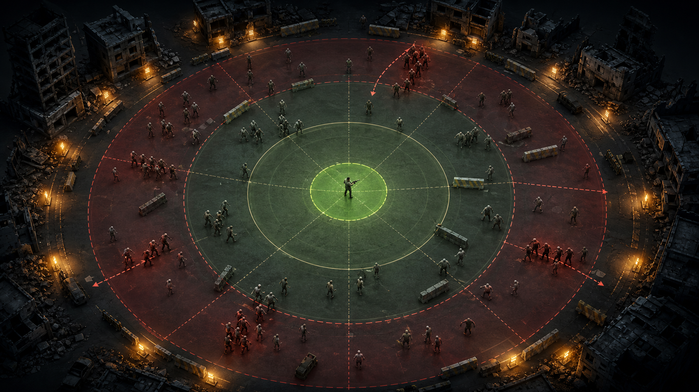

STOCHASTIC
SURVIVAL
Proceso de Poisson, método polar, combate discreto, inferencia Monte Carlo y visualización tridimensional en una sola experiencia reproducible.
De una oleada fija a un sistema aleatorio
Una aparición cada dos segundos es predecible. En una crisis conocemos una intensidad aproximada, pero no el instante exacto del siguiente evento.
Modelo determinista
Intervalos idénticos. No hay rachas, pausas ni variabilidad.
Modelo estocástico
Cada interarribo es una variable continua que modifica la presión de combate.
Objetivos y productos
Modelar
Traducir llegadas aleatorias a instantes de aparición matemáticamente justificables.
Comparar
Contrastar Poisson con una renovación Polar-lognormal bajo la misma tasa media.
Estimar
Calcular probabilidad de supervivencia e intervalos de confianza mediante Monte Carlo.
Visualizar
Representar arena, posiciones, alcance, peligro y telemetría en una escena 3D.
Verificar
Probar propiedades estadísticas, reproducibilidad y coherencia de eventos.
Comunicar
Entregar aplicación, código documentado, README, informe y presentación.
Una cadena causal completa
Proceso de Poisson homogéneo
$N(t)$ cuenta cuántos infectados han aparecido hasta el instante $t$ con tasa constante $\lambda$.
De uniforme a exponencial
La función acumulada exponencial se invierte para transformar números uniformes en segundos de espera.
Ejemplo
Con $\lambda=0.65$ y $U=0.35$:
Acumulación
El tiempo de aparición es la suma de esperas:
Marsaglia Polar genera normales
Aclaración conceptual
Polar no es una distribución de llegadas ni un proceso de conteo. Es un algoritmo para producir normales a partir de uniformes.
Los pares fuera del círculo unitario se rechazan y cada par aceptado entrega dos normales.
Proceso de renovación lognormal
Transformamos la normal generada por Polar para construir interarribos positivos con la misma media que Poisson.
Media compartida
La frecuencia promedio es comparable.
Variabilidad controlada
El escenario base usa $CV=0.45$.
Misma media, distinta estructura temporal
| Característica | Poisson | Polar-lognormal |
|---|---|---|
| Interarribo | Exponencial | Lognormal |
| Media | $1/\lambda$ | $1/\lambda$ |
| CV base | 1 | 0.45 |
| Memoria | Sin memoria | Depende del tiempo transcurrido |
| Conteo | Poisson exacto | Renovación, no Poisson |
| Patrón esperado | Rachas y pausas | Llegadas más regulares |
Del calendario al escenario

Protagonista
- Permanece en el centro.
- Ataca un objetivo a la vez.
- Prioriza al enemigo más cercano dentro del alcance.
Infectados
- Aparecen en $t_i$ cerca del perímetro.
- Avanzan radialmente.
- Suman daño al entrar en contacto.
Parámetros con unidades claras
| Grupo | Parámetro | Valor | Unidad |
|---|---|---|---|
| Llegadas | Tasa | 39 | llegadas/min |
| Misión | Horizonte | 90 | s |
| Polar | Coeficiente de variación | 0.45 | adimensional |
| Protagonista | HP / DPS / alcance | 110 / 42 / 10 | HP / HP s$^{-1}$ / m |
| Infectado | HP / velocidad / DPS | 42 / 1.55 / 9 | HP / m s$^{-1}$ / HP s$^{-1}$ |
| Numérico | Paso temporal | 0.05 | s |
Validación
Positividad y relaciones entre radios.
Reproducibilidad
Semilla controlada y flujos aleatorios separados.
Precisión
El usuario puede reducir $dt$ y observar el costo.
Arquitectura separada por responsabilidades
App/simulation.pyLlegadas, combate, Monte Carlo, Wilson.
App/visuals.pyMallas 3D y gráficas estadísticas.
App/app.pyFormulario, estado, caché y narrativa.
Corrección importante
El calendario completo y las llegadas ocurridas antes de una derrota se guardan por separado.
Eficiencia
El bucle recorre enemigos activos; no revisa todo el calendario en cada paso.
Por qué Plotly y no Pygame
Pygame
Excelente para superficies 2D, entrada y bucle de escritorio. El 3D exige OpenGL adicional y abre otra ventana.
No integradoPlotly Mesh3d
Mallas triangulares interactivas dentro de Streamlit. Mantiene controles, escena y estadística en la misma página.
Elección actualPanda3D
Motor 3D real con escena, animación y renderizado. Adecuado para una futura aplicación independiente.
Trabajo futuroMonte Carlo con incertidumbre
Una partida es una realización. Repetir $R$ veces permite estimar una proporción de supervivencia.
Semillas independientes
Cada corrida recibe una semilla derivada de una maestra.
Comparación pareada
Poisson y Polar usan el mismo vector de semillas.
Intervalo de Wilson
El IC al 95 % muestra la precisión, incluso cerca de 0 o 1.
Resultados reproducibles de referencia
| Métrica | Poisson | Polar |
|---|---|---|
| IC 95 % | [94.2, 97.9] % | [99.0, 100] % |
| Tiempo medio | 88.526 s | 90.000 s |
| Llegadas medias | 57.133 | 57.778 |
| Pico activo medio | 9.483 | 6.483 |
Poisson sigue siendo el modelo principal
Razones a favor
- Un solo parámetro interpretable.
- Correspondencia exacta entre conteo e interarribos.
- Incrementos independientes.
- Validación directa: media = varianza.
- Adecuado cuando no existe memoria.
Lo que aporta Polar
- Control explícito de variabilidad.
- Contraste contra llegadas regulares.
- Demuestra que la media no describe todo.
- Permite discutir adecuación del modelo.
- No reemplaza automáticamente a Poisson.
Mejor modelo = supuestos más coherentes con el fenómeno y los datos
Nueve pruebas automáticas
Propiedad Poisson
Media y varianza cercanas a $\lambda T$.
Media Polar
Interarribo positivo y cercano a $1/\lambda$.
Reproducibilidad
Igual semilla, igual trayectoria.
Coherencia temporal
No se cuentan llegadas posteriores a la derrota.
Comparación pareada
Mismas semillas para ambos modelos.
Precisión numérica
Resultado estable al reducir $dt$.
Supuestos y limitaciones
Tasa constante
No representa oleadas con intensidad variable dentro de una partida.
Movimiento radial
No hay colisiones ni evitación de obstáculos.
Jugador estacionario
No se modelan decisiones de desplazamiento.
Tiempo discreto
El combate depende del paso $dt$.
Censura temporal
Un histograma de una misión no es una prueba formal.
Error Monte Carlo
Los resultados son estimaciones con incertidumbre.
Conclusiones
1. Conexión
La variable continua $\Delta_i$ controla directamente el siguiente evento visible.
2. Variabilidad
Igual tasa media no implica igual concurrencia ni igual supervivencia.
3. Inferencia
Monte Carlo e intervalos evitan concluir desde una sola partida.
4. Ingeniería
La separación de motor, visuales e interfaz facilita verificación.
5. Visualización
Las mallas procedurales mantienen la experiencia dentro de Streamlit.
6. Elección
Poisson es principal por sus supuestos e interpretabilidad.
Demostración en cinco pasos
Mostrar la tabla de variables generadas, cambiar la tasa, conservar la semilla y explicar por qué el porcentaje debe leerse junto con su intervalo de confianza.
SIMULAR.
EXPLICAR.
La incertidumbre no se elimina: se modela, se repite y se comunica con evidencia.